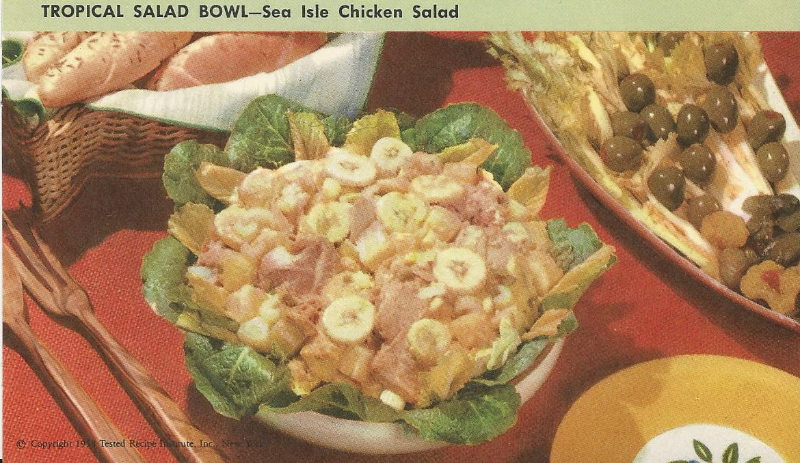

Tropical Salad Bowl

Ingredients
- 1 1/2 cups sliced bananas
- 1 can (14 ounces) pineapple chunks, drained
- 1 can (1 pound) salmon, drained and flaked
- 3/4 cup diced celery
- 3 tablespoons finely chopped sweet pickles
- 1 1/2 teaspoons salt
- 2 tablespoons mayonnaise
- 2 tablespoons prepared mustard
- Salad greens
Instructions
- Combine bananas and pineapple.
- Add flaked salmon, celery, pickles and salt.
- Combine mayonnaise and mustard in another bowl.
- Add to salmon-banana mixture and toss lightly to mix.
- Serve on crisp salad greens.
- Makes 6 servings